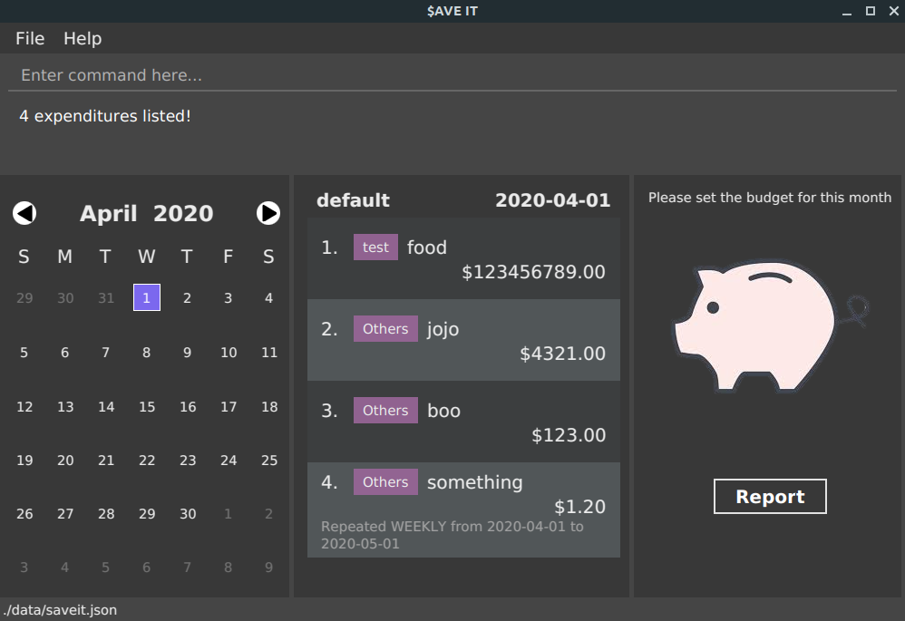

By: Team T10-3 Since: Mar 2020 Licence: MIT
1. Introduction
$AVE IT is a desktop budget management application. We are here to assist tertiary students who have needs in financial budgeting and management. Tertiary students who have to manage finance accounts from different sources such as school project and personal spending will find ease in using our application.
2. Quick Start
-
Ensure you have Java
11or above installed in your Computer. -
Download the latest
$AVE IT.jarhere. -
Copy the file to the folder you want to use as the home folder for $AVE IT application.
-
Double-click the file to start the app. The GUI should appear in a few seconds.
 -
Type the command in the command box and press Enter to execute it.
e.g. typinghelpand pressing Enter will open the help window. -
Some example commands you can try:
-
exp add -i chicken rice -a 4.50: adds new expenditure and information. -
exp delete 3: deletes the 3rd expenditure shown in the current list. -
exit: exits the app.
-
-
You can refer to Main Commands for details of each command.
3. Features
$AVE IT consists of features such as disjoint account, expenditure management,
recurring expenditure, budgeting, report. Additional features are calendar,
autocomplete and auto-saving of data.
3.1. Disjoint Accounts (Jiang Jiahui)
This feature aims to help you better organise your expenditures by allowing you to separate them into disjoint accounts.
You can add any many accounts as you like:
View your list of accounts using the command acc list:

Switch to a different account using the command, acc checkout ACCOUNT:

CCA
HomeRefer to Account Commands for more details on commands, including renaming, deletion and clearing of data.
3.2. Expenditures (Jiang Jiahui)
This feature forms the basis of our application. Use it to track your daily expenses!
Refer to Expenditure Commands for more details on how to add, edit, and delete expenditures.
3.3. Repeat (Zheng Shaopeng)
The Repeat feature allows you to add recurring expenditures.
You are able to create fixed expenditures records which will be recurring daily, weekly, monthly or annually.
As shown in the diagram below, a repeat will have a different display as compared to expenditure.
"Repeat details" includes the frequency of recurring, start date and end date are displayed.
Expenditure and Repeat3.3.1. Repeat type commands
Repeat has very similar command as Expenditure, with just a few of values to be specified.
Here, we will be using repeat add command as an example, while other repeat commands works the same way.
Format: repeat add -i INFO -a AMOUNT -sd START_DATE -ed END_DATE -p PERIOD [-t TAG]
1. Key in the command into the command box. We will be using repeat add -i bubble tea -a 3.50 -sd 2020-04-01 -ed 2020-04-30 -p weekly -t drink
as an example.
2. A response will be given to indicate that this recurring expenditure has been recorded.

3. As the START_DATE is 2020-04-01 and the PERIOD is set to weekly,
thus the first record will be at 2020-04-01 and last record will be on 2020-04-29.
For repeat add -i rental fee -a 300 -sd 2020-03-31 -ed 2021-03-31 -p monthly -t housing,
as the start date is 2020-03-31, the next tentative date should be 2020-04-31 but this date is invalid.
Hence, this expenditure record will be shown on 2020-04-30 instead. For May, it will be still shown on 2020-05-31.This applies to leap year too |
Refer to Repeat Commands for more details on how to add, edit
and delete Repeat type expenditures.
3.4. Budget (Lim Feng Yue)
The Budget feature allows you to set your budget monthly, and give you a better sense of whether you are on track to your financial goals. You can see your budget at the right panel of the application.
Initially, you will see this:

It means that there is not budget set for the month.
In order to know which month this month in the above image refers to, you can
look at the date in the middle panel.
3.4.1. Setting a budget
To set a budget you can use the setbudget Command. Shown below is an example:

After setting a budget, you will see that the information on the right panel has changed:

If your budget has been met, you will see the piggy bank from above. If your budget is not met, you will see something like this:

| To meet your budget, your balance have to be positive. |
3.4.2. Viewing budget from another month
To view budget from another month, you can use the go command, or
the [Calendar] feature to view any date of the month.

For example, going to 8 May 2020 allows you to view the budget set for May 2020.
3.5. Report (Ng Xin Pei)
3.5.1. Function
The Report feature allows you to have a quick overview of your expenditures. It can tell you your total spending within a period of time and have your spending categorised either by month or tag. You can have also have a permanent copy of the report, through the report printing and export capabilities.

This is an example of the report in bar chart format with the expenditures grouped by months. The horizontal line represents the expenditures whereas the vertical line shows the month followed by the total spending in that month. Alternatively, you can also group the expenditure by tags and read off the bar chart in a similar fashion.
If you are a visual person, you can consider using the pie chart format instead!
This is an example of report in pie chart format with the expenditures grouped by tags.
If you are interested to find out more, you can explore Report Command to find out how to generate these graphs.
3.6. Calendar (Zheng Shaopeng)
The calendar feature aims to ease users' navigation experience.
-
Users are able to traverse between different dates by clicking on the calendar.
Or, -
Users are able to make use of
gocommand to navigate to another date.
With reference to the diagram below, Header displays the year and month which the calendar is displaying. Box 1 displays the day which you are looking at while Box 2 refers to the today’s date.
3.6.1. Navigate using calendar
It may be troublesome and inconvenient for you to keep on making use of the command line input
to navigate between the dates, especially when the date you want to view is just one or
two days before.
In this situation, you can interact with the calendar and navigate with a simple click.
For example, we are now viewing expenditure records which are on 2020-04-09.
And we wish to view previous day’s expenditure record. We can simply click on the date on the calendar.
Below are two diagrams which will show the operation.
3.6.2. Navigate with go command
The developer team has taken into account the case when users wish to navigate to another date
which is way before or after. Thus, we have integrate the calendar with go command.
For example, we are now viewing expenditure records which are on 2020-04-09 and we wish to navigate to
2019-04-09 through go command.
1. We need to input go 2019-04-09 into the command box which is shown in the diagram below.
go command example2. A response will be given to indicate that the date has changed.

go command response3. The calendar and the expenditure records will update accordingly.

calendar and expenditure records are updated accordingly.3.7. Autocomplete (Lim Feng Yue)
The Autocomplete feature allows you to complete the basic commands of the application. It matches the what you type into the command box and tries to complete the command.
| If no dropdown appear, it means that either: the text does not match any commands, or the dropdown is hidden after clicking away. |
You can use the Up or Down arrow keys to navigate the dropdown, then press Enter to select the command you want to complete.
3.8. Saving the data
$AVE IT data is stored in the hard disk automatically after any command that changes the data.
There is no need to save manually.
4. Main Commands
Command Format:
Let’s use a command format,
exp add -i INFO -a AMOUNT [-t TAG] [-d DATE]
as an example.
-
The first word is the operation category of the command, in this case,
expbelongs to the expenditure operations. -
There may be a second word which is the specific command for the operation category, in this case,
add. -
Words starting with
-e.g.-i,-aand-tare the option prefix. Not all commands have options, an example is deleting an expenditure,exp delete 1.
| Refer to Section 7.1, “Prefix Notation” for what each prefix means. |
-
Words in caps are the parameters to be supplied by the user.
INFO,AMOUNTandTAGare parameters representing information, amount and tag of the expenditure respectively. It can be used as such,exp add -i chicken rice -a 4.50 -t food. -
Items in square brackets are optional, that means in this example
exp add -i chicken rice -a 4.50is also valid. -
Parameters can be in any order e.g. if the command specifies
-i INFO -a AMOUNT,-a AMOUNT -i INFOis also acceptable. -
However, if the parameter is not prefixed by any option prefixes, the order of the parameter matters.
4.1. Viewing help: help
Views the help message.
Format: help [COMMAND]
The available COMMAND will be shown when entering help.
|
Examples:
-
help -
help exp -
help go
4.2. Going to a specific date: go
Lists the expenditures from a particular date.
Format: go DATE
Use go today to go to today’s date.
|
Examples:
-
go 2020-05-05 -
go today
4.3. Account commands
4.3.1. Adding an account: acc add
Adds a new disjoint account to $AVE IT.
Format: acc add ACCOUNT
Examples:
-
acc add school -
acc add SpendLess1
The application does not automatically switch to the new account.
Use acc checkout ACCOUNT to do so.
|
4.3.2. Listing all accounts: acc list
List all disjoint accounts in $AVE IT.
Format: acc list
4.3.3. Renaming an account: acc rename
Renames an existing account in $AVE IT.
Format: acc rename [OLD_NAME] NEW_NAME
Example:
-
acc rename project2
Renames the current account toproject2. -
acc rename school uni
Renames the accountschooltouni.
4.3.4. Changing the current account: acc checkout
Changes the account view to another existing account.
Format: acc checkout ACCOUNT
Use acc list to view the available accounts.
|
Did you know git’s git checkout command is our inspiration for acc checkout?
|
Example:
-
acc checkout cca
Setsccato be the current account.
4.3.5. Clearing account information: acc clear
Reset the current account to a clean state.
Format: acc clear
| All information in the current account will be deleted, use with care. |
4.3.6. Deleting an account: acc delete
Deletes an existing account in $AVE IT.
Format: acc delete ACCOUNT
| The account and all the information in it will be deleted, use with care. |
Example:
-
acc delete school
Deletes the account namedschool.
4.4. Expenditure commands
4.4.1. Adding an expenditure: exp add
Adds an expenditure to the current account in $AVE IT.
Format: exp add -i INFO -a AMOUNT [-t TAG] [-d DATE]
Examples:
-
exp add -i chicken rice -a 4.50 -
exp add -i chicken rice -a 4.50 -t food -d 2020-01-01
4.4.2. Editing an expenditure : exp edit
Edits an existing expenditure in the current account in $AVE IT.
Format: exp edit INDEX [-i INFO] [-a AMOUNT] [-t TAG] [-d DATE]
Examples:
-
exp edit 1 -i veg rice
Updates the info of expenditure with index1toveg rice. -
exp edit 3 -a 3.23 -t transport -d 2020-02-02
Updates the amount, tag & date attributes to the new values.
4.4.3. Deleting an expenditure: exp delete
Deletes an existing expenditure in the current $AVE IT account.
Format: exp delete INDEX
Example:
-
exp delete 4
Deletes the expenditure with index4.
4.4.4. Listing expenditures: exp list
Lists the expenditures for the current active date in the current account.
Format: exp list
Use this command after find to return back to normal daily view.
|
4.5. Repeat commands
4.5.1. Adding a repeated expenditure: repeat add
Adds an expenditure that can be repeated.
Format: repeat add -i INFO -a AMOUNT -sd START_DATE -ed END_DATE -p PERIOD [-t TAG]
Do note that duplicate repeat records are allowed.
Examples:
-
repeat add -i transport fee -a 100 -sd 2020-01-01 -ed 2020-12-30 -p monthly
Adds a repeated expenditure calledtransport feewhich will be counted for $100 monthly on the first day of the month for the year of 2020. -
repeat add -i transport fee -a 100 -sd 2020-01-01 -ed 2020-12-30 -p monthly -t transport
4.5.2. Editing a repeated expenditure: repeat edit
Edits an expenditure that can be repeated.
Format: repeat edit INDEX [-i INFO] [-a AMOUNT] [-sd START_DATE] [-ed END_DATE] [-p PERIOD] [-t TAG]
Examples:
-
repeat edit 2 -i concession
Edits the information of the repeated expenditure with index2toconcession. -
repeat edit 3 -p weekly -ed 2020-07-02
Edits the interval for the repeated expenditure with index3to weekly and ends at 2 July 2020.
4.5.3. Deleting a repeated expenditure: repeat delete
Deletes an expenditure that can be repeated.
Format: repeat delete INDEX
Example:
-
repeat delete 4Deletes the repeated expenditure with index4.
4.6. Budget setting command: setbudget
Sets the budget amount in an account for the specified month.
Format: setbudget -a AMOUNT [-ym YEAR_MONTH]
| Budget cannot be unset after setting it. |
Examples:
-
setbudget -a 1000
Sets the budget of $1000 for this month. -
setbudget -a 1000 -ym 2020-03
Sets the budget of $1000 for the month of March in 2020.
4.7. Locating both repeats and normal expenditures by keyword: find
Find expenditures (both single and repeated) which contain the keyword(s).
Format: find [KEYWORD…]
Use exp list to exit from the search results.
|
Examples:
-
find rice
ReturnsChicken riceandVeg Rice. -
find Spicy Chicken Rice
Returns any expenditures or repeats having namesSpicy,Chicken, orRice.
4.8. Report commands
This section will talk about how to use the report feature. Before we begin with the details of the command, here are some things to note :
-
Before beginning this section, you can refer to Report Feature to look at how the reports will look like and how to read it.
-
If there is huge difference in expenditure amount, using a Bar chart will be better as overlaps might occur for Pie chart.
-
For best usage, keep start date and end date to be within 12 months for reports generated by months. Similarly, keep number of tags to be within 12 for reports generated by tags. As it is possible that not all months or tags will be displayed, if start and end date exceeds 12 months or tags exceed 12.
-
For best usage, send report for printing only after the previous print job is done. As sending multiple print jobs in a short period of time can cause print jobs to be lost.
4.8.1. Viewing expenditures report: report view
Generates report on expenditure spending in the given period.
Format: report view -sd START_DATE -ed END_DATE -g GRAPH_TYPE -o ORGANISATION
Examples:
-
report view -sd 2020-03-01 -ed 2020-03-31 -g pie -o tag -
report view -sd 2020-03-01 -ed 2020-03-31 -g bar -o month
4.8.2. Exporting report: report export
Exports report on expenditure spending in the given period.
Format: report export -sd START_DATE -ed END_DATE -g GRAPH_TYPE -o ORGANISATION -f FILE_NAME
Examples:
-
report export -sd 2020-03-01 -ed 2020-03-31 -g pie -o tag -f Hello -
report export -sd 2020-03-01 -ed 2020-03-31 -g bar -o month -f report
4.8.3. Printing report: report print
Prints report on expenditure spending in the given period.
Format: report print -sd START_DATE -ed END_DATE -g GRAPH_TYPE -o ORGANISATION
Examples:
-
report print -sd 2020-03-01 -ed 2020-03-31 -g pie -o month -
report print -sd 2020-03-01 -ed 2020-03-31 -g bar -o tag
4.9. Exiting the program: exit
Exits the program.
Format: exit
5. Report Window Commands
These are the commands to be executed in the report window.
5.1. Viewing expenditures report
The result of this command is equivalent to Section 4.8.1, “Viewing expenditures report: report view”.
|
Generates report on expenditure spending in the given period.
Format: view START_DATE END_DATE GRAPH_TYPE ORGANISATION
Examples:
-
view 2020-03-01 2020-03-31 pie tag -
view 2020-03-01 2020-03-31 bar month
5.2. Exporting report: export
Exports the current report shown in the report window.
Format: `export FILE_NAME `
5.3. Printing report: print
Prints the current report shown on the report window.
Format: print
5.4. Exiting the report window: exit
Exits the report window.
Format: exit
6. FAQ
Q: How do I transfer my data to another Computer?
A: Install the app in the other computer and overwrite the empty data file it creates with the file that contains the data of your previous $AVE IT folder.
7. Command Summary
7.1. Prefix Notation
Prefix |
Meaning |
|
information |
|
amount |
|
date |
|
tag |
|
start date |
|
end date |
|
year month |
|
period |
|
graph type |
|
file name |
|
organised by |
7.3. Account Operations
-
acc add :
acc add ACCOUNT
e.g.acc add Personal -
acc list :
acc list -
acc rename :
acc rename OLD_NAME NEW_NAME
e.g.acc rename Personal non-personal -
acc checkout :
acc checkout ACCOUNT
e.g.acc checkout Personal -
acc clear :
acc clear -
acc delete :
acc delete ACCOUNT
e.g.acc delete Personal
7.4. Expenditure Operations
-
exp setbudget :
exp setbudget -a AMOUNT [-ym YEAR_MONTH]
e.gsetbudget -a 1000 -ym 2020-04 -
exp add :
exp add -i INFO -a AMOUNT [-t TAG] [-d DATE]
e.gexp add -i chicken rice -a 3.50 -t meal -d 2020-04-01 -
exp edit :
exp edit INDEX [-i INFO] [-a AMOUNT] [-t TAG] [-d DATE]
e.gexp edit 1 -i duck rice -a 4.50 -d 2020-04-02 -
exp delete :
exp delete INDEX
e.gexp delete 1 -
exp list :
exp list
7.5. Repeat Operations
-
repeat add :
repeat add -i INFO -a AMOUNT -sd START_DATE -ed END_DATE -p PERIOD [-t TAG]
e.grepeat add -i bus fare -a 1.50 -sd 2020-03-01 -ed 2020-04-01 -p daily -t transport -
repeat edit :
repeat edit INDEX [-i INFO] [-a AMOUNT] [-sd START_DATE] [-ed END_DATE] [-p PERIOD] [-t TAG]
e.grepeat edit 2 -a 1.20 -ed 2020-04-02 -
repeat delete :
repeat delete INDEX
e.grepeat delete INDEX
7.6. Report (Main Window) Operations
-
report view :
report view -sd START_DATE -ed END_DATE -g GRAPH_TYPE -o ORGANISATION
e.g.report view -sd 2020-03-01 -ed 2020-03-31 -g pie -o month -
report export :
report export -sd START_DATE -ed END_DATE -g GRAPH_TYPE -o ORGANISATION -f FILE_NAME
e.g.report export -sd 2020-03-01 -ed 2020-03-31 -g pie -o month -f hello -
report print :
report print -sd START_DATE -ed END_DATE -g GRAPH_TYPE -o ORGANISATION
e.g.report export -sd 2020-03-01 -ed 2020-03-31 -g bar -o tag
7.7. Report (Report Window) Operations
-
report view equivalence :
view START_DATE END_DATE GRAPH_TYPE ORGANISATION
e.g.view 2020-03-01 2020-03-31 bar tag -
report export equivalence :
export FILE_NAME
e.g.export hello -
report print equivalence :
print
e.g.print -
exit :
exit
e.g.exit